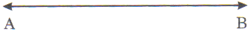
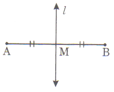

Synopsis
Point
A point is represented by a dot. It has no dimensions like length, breadth or thickness. It has only position. Point are denoted by capital letters A, B, C, D etc.
Line :
A geometrical line is a set of points that extends endlessly in both the directions i.e., a line has no end points. It has only length. The narrow heads show that the line goes on endlessly on either side
Lines are denoted by small letters l, m, n,.......
Line-segemnt :
A line segment is a line which has end points. In the above figure, the part of the line between the points. 'A' and 'B' including 'A' and 'B' is a line-segment.

The line segment AB is represented as B or segment AB.
Plane
A plane is a set of points. It is a point surface with length and breadth. A geometrical plane extends endlessly in all the directions. Small letters are used to denote a plane.
Surface of a sheet of paper, surface of a wall.
Coplanar points
The points that belong to the same plane are called coplanr points.
Coplanar Lines :
The lines that lie in the same palne are caled coplanra lines
Space
The universal set of points, lines and planes is called a space. It has no end.
Incidence Properties
The relations between a point and a line is calle an incidence property
Distance between two points :
The distance between two points A and B is the length of the line segment joining them.
The distance between A and B is denoted by d(A, B) or AB.
Midpoint:
Given a line segment AB, a point M is said to be the midpoint of AB, if M is an interior point AB, such that AM = MB.
Perpendicular Bisector
A line 'l' passing through the mid point 'M' of a line segment \( \overline{AB} \) and perpendicular to AB is called the perpendicular bisector of the line segment \( \overline{AB} \) .

Collinear Points:
If three or more points lie on st.line, then those points are called collinear points.
Non-Collinear
The points which donot lie on the straight line are called non-collinear points.
C, G, H do no lie on the straight line T.
Hence, they are non-collinear points.
Note : A point 'C' is said to line between 'A' and 'B', if
A, B, C are collinear and
AB = AC + BC
Ray:
Let 'l' be a line and A, B be two distinct points on T.
A ray is a part of the line 'l' which has one end point as 'A' and contains the point 'B'. A ray is denoted by the symbol \( \overightarrow{AB}. \)
Two rays \( \overightarrow{AB} \) and \( \overightarrow{AB} \) are said to be opposite, if they are collinear and \( \overightarrow{AB} \cap \overightarrow{AC} = (A) \) i.e., the point A is the only common point of the two rays.
Angle:
Definition: An angle is the union of two rays with a common initial point when a ray AB rotates in the plane about the point 'A' and takes new position 'AC', an angle BAC is formed symbol of angle is \( \angle \)
The angle formed by the two rays \( \overightarrow{AB} \) and \( \overightarrow{AC} \) is denoted by \( \angle{BAC} \ or \ \angle{CAB}. \)
The two rays \( \overightarrow{AB} \) and \( \overightarrow{AC} \) are called the arms and the common initial point 'A' is called the vertex.
Bisector of an Angle :
A line which divides an angle into two equal parts is called the bisector of the angle. The line OP is called the bisector of \( \angle{AOB} \)
\( \angle{AOP} = \angle{POB} \)
Types of Angles :
Right Angles:
An angle which is equal to \( 90^{ \circ} \) is called a right angle.
Acute Angles:
An angle which is less than \( 90^{ \circ} \) is called an acute angle.
Obtuse Angles:
An angle which is greater than \( 90^{ \circ} \) but less than \( 180^{ \circ} \) is called an obtuse angle.
Straight Angle:
An angle which is equal to \( 180^{ \circ} \) is called a straight angle.
Complete Angle:
An angle which is exactly equal to \( 360^{ \circ} \) is called a complete angle.
Reflex Angle:
An angle which is greater than \( 180^{ \circ} \) but less than \( 360^{ \circ} \) is called reflex angle.
Zero Angle:
A angle in said to be a zero angle when two rays coin side and the measure is \( 360^{ \circ} \) .
Pair of Angles :
-
Complementary Angles :
When the sum of the measure of two angles is equal to \( 90^{ \circ} \) , then the angles are said to be complementary angles.
\( \angle{x} + \angle{y} = 90^{ \circ} \)
\( \therefore \angle{x} \) and \( \angle{z} \) are complementary angles
-
Supplementary Angles :
When the sum of the measure of two angles is equal to \( 180^{ \circ} \) , then the angles are said to be supplementary angles,
\( \angle{x} + \angle{y} = 180^{ \circ} \)
\( \therefore \angle{x} \) and \( \angle{z} \) are supplementary
Adjacent angles:
Angles having the same vertex and a common side and which lie on the opposite sides of the common side are called adjacent angles.
Angles AOB and COB with common vertex 0 and common side OB are adjacent angles.
Line pair of Angles:
Two adjacent angles are said to form a linear pair of angles if they lie on the same straight line. The two non-common arms are opposite rays.
The sum of two adjacent angles of a linear pair of angles is \( 180^{ \circ} \) , hence they are also Supplementary.
Congruent Angles:
Two angles are said to be congruent if they have the same measure.
Vertically Opposite Angles:
If two lines AB and CD intersect at a point 'O', then the pair of angles \( \angle{AOC} \) and \( \angle{BOD} \) is said to be a pair of vertically opposite angles. Also \( \angle{AOD} \) and \( \angle{BOC} \) form another pair of vertically opposite angles.
Angles forming a pair of vertically opposite angles are congruent (or equal)
Interior of an Angle:
It is a set of points on the same side of the lines forming the angles.
Angle Addition Axiom :
\( m \angle{ABC} = \angle{ABP} + m \angle{PBC} \)
Exterior of an angle is the set of points. Which do no lie on the angle or in its interior.
The sum of the measures of the angles formed around a point is \( 360^{ \circ} \) .
Angles in a Transversal
-
Interior angles are the angles inside the parallel lines and on both sides of the transversal.
-
Co-interior angles are the interior angles lying on the same side of the transversal.
-
Exterior angles are the angles lined outside the parallel lines and on both sides of the transversal.
-
Corresponding angles are the angles on the same side of the transversal with one angle interior and the other angle exterior and the angles are not adjacent angles.
-
If a transversal intersects two coplanar parallel lines, then the corresponding angles are equal. This is corresponding angles axiom.
-
Alternate angles are the interior angels lying on either side of the transversal and are not adjacent angles.
Properties of Angles:
-
The adjacent angles formed when one straight line stands over another are together equal to two right angles i.e., \( 180^{ \circ} \) .
-
If two adjacent angles are supplementary then their outer arms are on a straight line.
-
If two straight lines cut one another, the four angles so formed are together equal to four right angles i.e., \( 360^{ \circ} \) .
-
If two straight lines cut one another, the vertically opposite angles are equal.
-
When a number of straight lines meet at a point the sum of all angles so formed at that point is equal to four right angles i.e., \( 360^{ \circ} \) .
Properties of Parallel Lines:
-
If a transversal intersects two coplanar parallel lines in such a way that,
-
A pair of alternate angles are equal then the two lines are parallel.
-
A pair of interior angles on the same side of the transversal are supplementary, then the two lines are parallel.
-
If a transversal intersects a pair of parallel lines, then
-
The interior angles on the same side of the transversal are supplementary.
-
Each pair of alternate interior angles are equal.
-
Straight lines which are parallel to the same straight line are themselves parallel to one another
-
If there are three or more parallel straight lines and the intercepts made by them on any transversal are equal, then the corresponding intercepts on any other transversal are also equal.
| Triangles |
Name |
Properties |
| Equilateral |
-
Always acute angled.
-
All 3 sides equal.
-
3 angles are equal and each equal to \( 60^{ \circ} \)
.
-
In center, circumcentre,orthocentre and centroid coinside.
-
Point of intersection of altitudes, medians and angular bisectors is same.
|
| Isosceles |
-
2 sides equal.
-
2 angles equal.
-
2 medians, 2 altitudes equal.
-
Internal bisectors of 2 angles are equals.
-
Bisector of vertical angle bisects the base and perpendicular to the base.
-
May be acute, obtuse or right angled triangle.
|
| Isosceles right angled triangle |
-
2 sides are equal.
-
Angle included by the equal sides is \( 60^{ \circ} \) .
-
Other two angles are each \( 45^{ \circ} \) .
|
| Right angled triangle |
-
One angle is \( 90^{ \circ} \) .
-
Sum of the other two is \( 90^{ \circ} \) .
-
Side opposite to \( 90^{ \circ} \) is hypotenuse and is the greatest side.
-
Median to the hypotenuse is half of the hypotenuse.
-
Of the two acute angles, if one is \( 30^{ \circ} \) . The smallest sides is half of the greatest side or the side opposite to \( 30^{ \circ} \) is half of hypotenuse.
|
Similar Triangles
Two triangles are said to be similar if their corresponding angles are equal i.e., if the triangles are equiangular to one another. Two congruent triangles are always similar, but two similar triangles may not be congruent.
Congruency of Triangles:
Two triangles are said to be congruent of every part (i.e., side, angle, median, attitude are a etc., of one of congruent to every corresponding part of the other.
Conditions for Congruency of Two Triangles:
-
SSS:
If the three sides of one triangle be equal to the three sides of the other.
-
AAS:
If two angles and any one side of a triangle be equal to two angles and corresponding side of the other.
-
SAS:
If two sides and the included angle of a triangle be equal to two sides and the included angle of the other.
-
RHS:
In two angled triangles, if the hyp. and any one side of a triangle be equal to the hypotenuse and one side of the other, then the triangles are equal in all respects i.e., they are congruent.
Medians and Centroid:
-
The medians is a line segment from the vertex to the midpoint of the opposite side. D, E, F are the midpoints of the sides BC, CA, AB of \( \triangle{ABC} \) . So AD, BE and CF and the medians.
-
There are three medians in a triangle, AD, BE, and CF are the medians of \( \triangle{ABC} \) .
-
Three medians of a triangle are concurrent (i.e., they pass through a common point of outer section.
-
The point of intersection of in medians is called as one centroid (G).
-
The centroid divider a median in the ratio 2 :1.
-
A median bisects a triangle i.e., divides a triangle into two parts of equal areas.
Euclids Five postulates
Poatulate 1:
A straight line may be drawn from any one point to any other point.
Axiom:
Given two distinct points, there is a unique line that passes through them.
Poatulate 2:
A terminated line can be produced indefinitely.
Poatulate 3:
A circle can be drawn with any centre and any radius.
Poatulate 4:
All right angles are equal to another.
Poatulate 5:
If a straight line falling on two straight lines makes the interior angles on the same side of it taken together less than two right angles, then two straight lines, if produced indefinetly, meet that side on which the angles are less than two right angles.
Playfair's Axiom (Theorem - 1) :
For every line 'l' and for every point 'p' not lying on 'l', there exists a unique line 'n' passing through `p' and parallel to 'l'.
Parallel Axiom (Theorem - 2) :
If 'l' is a line and 'p' is a point not on 'l' then there is one and only one line which passes through 'p' and is parallel to 'l'.
Theorem - 7
If a transversal intersects two parallel lines, then each pair of alternate angles are equal.
Theorem - 8
If a transversal intersects two parallel lines, then each pair of consecutive interior angles are supplementary.
Theorem - 9
If a transversal intersects two lines in such a way that a pair of consecutive interior angles are supplementary, then the two lines are parallel.
Theorem - 3
Two lines which are both parallel to the same line are parallel to each other
Linear Pair Axiom (Theorem - 4):
If a ray stands on a line, then the sum of two adjacent angles so formed is \( 180^{ \circ} \) .
(Theorem - 5):
If two lines intersect, then the vertically opposite angles are equal.
Corresponding Angles Axiom (theorem - 6)
If a transversal intersects two parallel lines, then each pair of corresponding angles are equal, conversely if a transversal intersects two lines, making a pair of corresponding angles are equal, then the lines are parallel.
Solved examples
Example 1:
ABC is a right triangle with right angle at B; AC = 2 units, BC = 1 unit and BD is perpendicular to AC. The area of the rectangle with BD as one of its diagonal is:
Solution:
\( \begin{align} AB^2 = AC^2 - BC^2 = 4 - 1 = 3 \\\\[3pt]
AB = \sqrt{3} \\\\[3pt]
ar( \triangle{ABC}) = \frac{1}{2} \times AB \times BC \\\\[3pt]
= \frac{1}{2} \times \sqrt{3} \times 1 = \frac{ \sqrt{3}}{2} \\\\[3pt]
also \ ar( \triangle{ABC}) = \frac{1}{2} \times BD \times AC \\\\[3pt]
= \frac{1}{2} \times BD \times 2 \\\\[3pt]
\Rightarrow \frac{ \sqrt{3}}{2} = BD \\\\[3pt]
Consider \ \triangle{BDF} \ and \ \triangle{ACB} \\\\[3pt]
\angle{BFD} = \angle{ABC} = 90^{ \circ} \\\\[3pt]
\angle{DBC} + \angle{DCB} = 90^{ \circ} = \angle{BAC} + \angle{BCA} \end{align} \)
\( \begin{align} \Rightarrow \angle{DBF} + \angle{DCB} = \angle{BAC} + \angle{BCD} \\\\[3pt]
\Rightarrow \angle{DBF} + \angle{BAC} \\\\[3pt]
\Rightarrow \triangle{BDF} \sim \triangle{ACB} \ (AA \ axiom \ of \ similarity). \\\\[3pt]
\Rightarrow \frac{DF}{CB} = \frac{BD}{AC} = \frac{BF}{AB} \\\\[3pt]
\Rightarrow \frac{DF}{1} = \frac{ \sqrt{3}}{4} = \frac{BF}{ \sqrt{3}} \\\\[3pt]
\Rightarrow DF = \frac{ \sqrt{3}}{4} \ and \ = \frac{BF}{ \sqrt{3}} \\\\[3pt]
ar(BEDF) = BF \times DF = \frac{3}{4} \times \frac{ \sqrt{3}}{4} = \frac{3 \sqrt{3}}{16} \end{align} \)
Example 2:
The sides a, b and c of triangle satisfy \( \sqrt{a} + \sqrt{b} = \sqrt{c}. \) Which of the following best describes the triangle ?
Solution:
\( \begin{align} \sqrt{a} + \sqrt{b} = \sqrt{c} \\\\[3pt]
\Rightarrow a + b + 2 \sqrt{ab} > a + b \end{align} \)
Example 3:
ABCD is a rectangle with E and F are any two points on the sides CD and DA such that \( \angle{BFE} = 90^{ \circ} \) . If BE = 25 units, determine the lengths of the sides of the various right triangles in the figure, given that the lengths are integers?
Solution:
Example 4:
In \( \triangle{ABC} \) the lengths of sides BC, CA nd AB are a, b and c respectively. Median AD drawn from A is perpendicular to AB then b is :
Solution:
Using appolonius theorem,
\( b^2 + c^2 = \left( AD^2 + \frac{a^2}{4} \right ) \)
\( \begin{align} \Rightarrow b^2 + c^2 = 2 \left( \frac{a^2}{4} - c^2 + \frac{a^2}{4} \right) \\\\[3pt]
\Rightarrow b^2 + c^2 = a^2 - 2c^2 \Rightarrow b^2 = a^2 - 3c^2 \Rightarrow b = \sqrt{a^2 - 3c^2} \end{align} \)
Example 5:
Two triangles are similar but not congruent and the lengths of the sides of the first are 6 cm, 11 cm and 12 cm. The sides of the second also have integral lengths, and one of them is congruent to a side of the first. What is the perimeter of the second triangle?
Solution:
Let x, y and z be the integral lengths of the second triangle.
Since the triangles are similar, we can write as \( \frac{x}{6} = \frac{y}{11} = frac{z}{12} \) ......(1)
Case (i): If x = 6 then from (1), we get y = 11 and z = 12 which is impossible, since the triangles are not congruent.
Case (ii): If x = 11 then from (1), we get \( y = \frac{121}{6} = 20.16 \) and z = 22.
Since y is not an integral number, so x \( \neq \) 11.
Case (iii): If x = 12, then from (1), we get y = 22 and z = 24.
Truth the sides of the second triangle are 12 cm, 22 cm and 24 cm
\( \therefore \) Perimeter of the second triangle = 12 + 22 + 24 = 58 cm.
Example 6:
In \( \angle{ABC} \) , E is a point on AB, F and D are two points on BC such that EF parallel to AD and ED parallel to AC. If BF = 4 cm, FD = 6 cm, BE = 8 cm then BC = .......
Solution:
Let AE = x, DC = y. In
\( \triangle{ABD}, \ \overline{EF} || \overline{AD} \)
\( \Rightarrow \frac{8}{x} = \frac{4}{6} \ ( \text{By basic proportionality theorem}) \)
\( \Rightarrow x = 12 \)
In \( \triangle{ABD}, \ \overline{EF} || \overline{AD} \)
\( \Rightarrow \frac{8}{x} = \frac{10}{y} \Rightarrow y = 15 \)
\( \therefore BC = BD + DC = 25 \ cm \)
Example 7:
ABCD is a quadrilateral with right angles at A and C. Points E and F are on the diagonal AC such that DE and BF are both perpendicular to AC. If AE = 3 cm, DE = 5 cm and CE = 7 cm then the length of BF is ------- cm
Solution:
In
\( \begin{align} \triangle{ADE}, \\\\[3pt]
\angle{EAD} + \angle{EDA} = 90^{ \circ} \ and \ \\\\[3pt]
\angle{EAD} + \angle{BAF} = 90^{ \circ} \ \Rightarrow \angle{EDA} = \angle{BAF} \\\\[3pt]
\angle{AED} \sim \triangle{BAF} \ ( \text{A,A axiom of similarity}) \\\\[3pt]
\Rightarrow \frac{DE}{AF} = \frac{DE}{AE} = \frac{5}{3} .....(1) \\\\[3pt]
similarly \ \triangle{CFB} : \triangle{DEC} \\\\[3pt]
\Rightarrow \frac{CE}{BF} = \frac{DE}{CF} \\\\[3pt]
\Rightarrow \frac{CF}{BF} = \frac{DE}{CE} = \frac{5}{7}......(2) \\\\[3pt]
Adding \ (1) \ and \ (2) \\\\[3pt]
\frac{AF + CF}{BF} = \frac{50}{21} \\\\[3pt]
\Rightarrow \frac{AC}{BF} = \frac{50}{21} \\\\[3pt]
\Rightarrow \frac{10}{BF} = \frac{50}{21} \\\\[3pt]
\Rightarrow BF = 4.2 \end{align} \)
Example 8:
ABC is a triangle and 'O' is the point of intersection of the medians then \( (AB^2 + BC^2 + CA^2) \) is equal to:
Solution:
By appolonius theorem
\( AB^2 + AC^2 = 2(AD^2 + BD^2) \)
In
\( \begin{align} \Rightarrow AB^2 + AC^2 = 2 \left( \left( \frac{3}{2} OA \right)^2 + \left( \frac{BC}{2} \right)^2 \right) \\\\[3pt]
\Rightarrow AB^2 + AC^2 = \frac{9}{2} OA^2 + \frac{1}{2} BC^2 ......(1) \\\\[3pt]
Similarly BC^2 + BA^2 = \frac{9}{2} OB^2 + \frac{1}{2} AC^2 ......(2) \\\\[3pt]
and \ CA^2 + CB^2 = \frac{9}{2} OC^2 + \frac{1}{2} AB^2 ........(3) \\\\[3pt]
\text{Adding (1), (2) and (3)} \\\\[3pt]
2(AB^2 + BC^2 + CA^2) = \frac{9}{2} (OA^2 + OB^2 + OC^2) + \frac{1}{2} (AB^2 + BC^2 + CA^2) \\\\[3pt]
\Rightarrow \frac{3}{2} (AB^2 + BC^2 + CA^2) = \frac{9}{2} (OA)^2 + OB^2 + OC^2) \\\\[3pt]
\Rightarrow AB^2 + BC^2 + CA^2 = 3(OA^2 + OB^2 + OC^2) \end{align} \)
Example 9:
\( \triangle{ABC} \) is an equilateral triangle with side length 12 cm. The radius of the inscribed circle is:
Solution:
\( \triangle \) = rs where, r-inradius, s-semiperimeter of triangle
\( \frac{ \sqrt{3}}{4} \times 12 \times 12 = r \times \frac{ \sqrt{3}}{4} \times 12 \times 12 = r \times \frac{36}{2} \Rightarrow r = 2 \sqrt{3} \ cm \)
Example 10:
Each side of \( \angle{ABC} \)
Solution:
\( \triangle \) = rs where, r-inradius, s-semiperimeter of triangle
\( \frac{ \sqrt{3}}{4} \times 12 \times 12 = r \times \frac{ \sqrt{3}}{4} \times 12 \times 12 = r \times \frac{36}{2} \Rightarrow r = 2 \sqrt{3} \ cm \) is 12 units. D is the foot of the perpendicular dropped from A on Be, E is the midpoint of AD. The length of BE in the same units is:
Solution:
\( \triangle{ABC} \) is equilateral and \( AD \perp BC \)
\( \begin{align} \Rightarrow BD = DC = 6 \\\\[3pt]
\Rightarrow AD = \frac{ \sqrt{3}}{4} \times 12 = 6 \sqrt{3} \\\\[3pt]
\Rightarrow AE = ED = 3 \sqrt{3} \\\\[3pt]
In \ \triangle{BED}, \ BE^2 = BD^2 + DE^2 \\\\[3pt]
BE^2 = 6^2 + (3 \sqrt{3})^2 = 36 + 27 \\\\[3PT]
BE = \sqrt{63} \end{align} \)
Example 11:
If G is the centroid of any \( \triangle{ABC} \) , then show that \( \frac{AG^2 + BG^2 + CG^2}{AB^2 + BC^2 + CA^2} = \frac{1}{3} \)
Solution:
Since G is the centroid of any \( \triangle{ABC} \) , let us choose an equilateral triangle with side length a units.
\( \Rightarrow AB = BC = CA \ and \ AG = BG = CG = \frac{2}{3} \times median \ length = \frac{2}{3} \times \frac{ \sqrt{3}}{2} a = \frac{1}{ \sqrt{3}} a \)
\( \frac{AG^2 + BG^2 + CG^2}{AB^2 + BC^2 + CA^2} = \frac{3 AG^2}{3 AB^2} = \frac{ \frac{1}{3} a^2}{a^2} = \frac{1}{3} \)
Example 12:
An infinite series of similar right triangles converges to point
C. If AE = 16, and ED = 8. What is the sum of all the vertical segment (AE + BD + ......)?

Solution:
Since all right triangles are similar
\( \begin{align} \Rightarrow \triangle{ABE} \sim \triangle{EDB} \\\\[3pt]
\Rightarrow \frac{EB}{AE} = \frac{BE}{DB} \Rightarrow \frac{AB}{AE} = \frac{BD}{EB} \end{align} \)
Let \( \frac{EB}{AE} = X, \) EB = AEx = 16x and BD = EBx = \( 16x^2 \)
\( \Rightarrow AE = 16, \ BD = 16X^2 \) the next vertical segment is \( 16x^2 \times x^2 = 16x^4 \) and son on.
Sum of all vertical segments is a infinite geometric series
Also \( EB^2 = ED^2 + BD^2 \)
\( \begin{align} \Rightarrow (16 x)^2 = 82 + (16 x^2)^2 \\\\[3pt]
\Rightarrow 4x^2 = 1 + 4x^4 \\\\[3pt]
\Rightarrow (2x^2) - 2(2x^2) + 1 = 0 \\\\[3pt]
\Rightarrow (2x^2 - 1)^2 = 0 \\\\[3pt]
\Rightarrow x = \frac{1}{ \sqrt{2}} \end{align} \)
\( \therefore AE + BD + ...... = 16 + 16x^2 + 16x^4 + ..... = \frac{16}{1 - x^2} = \frac{16}{1 - \frac{1}{2}} = 32 \)
Example 13:
In \( \triangle{ABC} \) , D is a point on side BC. If AC = 3 cm, AD = 3 cm BD = 8 cm and CD =1 cm then AB is:
Solution:
From \( \triangle{ABP}, \ x^2 - 8.5^2 = AP^2 \)
From \( \triangle{D}, \ 9 - \frac{1}{4} = AP^2 \)
\( \Rightarrow x^2 - 8.5^2 =9 - \frac{1}{4} = \frac{35}{4} \)
\( x^2 = \frac{289 + 35}{4} = \frac{324}{4} = 81 \Rightarrow x = 9 \ cm \)
Example 14:
The \( n^{th} \) triangular number is defined to be the sum of the first n positive integers. For example, the 4th triangular number is 1 + 2 + 3 + 4 = 10. In the first 100 terms of the sequence 1, 3, 6, 10, 15, 21, 28,.......... of triangular numbers, how many are divisible by 7.?
Solution:
1, 3, 6, 10, 15, 21, 28, ...
Every 6th, 7th term divisible by 7
\( \Rightarrow \) The number of triangular numbers which are divisible by 7
= 16 + 14 - 2 = 28
Example 15:
How many triplets (x, y, z) of positive real numbers can be found such that \( x^y = z, \ y^z = x \ and \ z^x = y \) ?
Solution:
\( x^y = z, \ y^z = x \ and \ z^x = y \)
\( x^y = z \Rightarrow (xy)^{zx} = z^{zx} \Rightarrow x^{xyz} = y^z = x \)
Thus \( x^{xyz} = x \Rightarrow xyz = 1 \)
Suppose one of x, y or z, say x is larger than 1.
Since \( y^z = x \) , either y or z must be larger than 1.
If y is larger than 1, then \( z = x^y \) is also larger than 1.
If z is larger than 1, then \( y = z^x \) is also larger than 1.
Hence, if one of the numbers is larger than 1, they are all, but as the product of the numbers equals 1, they cannot all be larger than 1.
Hence they are all less than or equal to 1. If one of them is less than one, it no follows that the product is less than 1.
\( \therefore \) it must be x = y = z = 1
i.e., the number of triplets possible is only one.
Example 16:
Suppose that the lines which bisect the exterior angles at B and C of \( \triangle{ABC} \) meet at D. Then find \( \angle{BDC} \)
Solution:
BD is the bisector of
\( \begin{align} \angle{XBC} \\\\[3pt]
\Rightarrow \angle{DBC} = \frac{1}{2} (180^{ \circ} - \angle{B}) = 90^{ \circ} - \frac{ \angle{B}}{2} \\\\[3pt]
Similarly \ \angle{DCB} = 90^{ \circ} - \frac{ \angle{C}}{2} \\\\[3pt]
In \ \triangle{BDC}, \ \angle{BDC} = 180^{ \circ} - \angle{DBC} - \angle{DCB} \\\\[3pt]
= 180^{ \circ} - 90^{ \circ} + \frac{ \angle{B}}{2} - 90^{ \circ} + \frac{ \angle{C}}{2} \\\\[3pt]
= \frac{1}{2} ( \angle{B} + \angle{c}) = \frac{1}{2} (180^{ \circ} - \angle{A}) \\\\[3pt]
= 90^{ \circ} - \frac{ \angle{A}}{2} \end{align} \)
Example 17:
Points A, B, C are collinear. Point B is the mid-point of the line segment AC. Point D is not collinear with the other points for which DA = DB and DB = BC = 10. What is the length of DC?
Solution:
\( \begin{align} \triangle{ABD} \ is \ an \ equilateral \ \triangle^{le}. \\\\[3pt]
\Rightarrow \angle{ADB} = 60^{ \circ} \ and \ \angle{DBC} = 120^{ \circ} \\\\[3pt]
\Rightarrow \angle{BDC} = \frac{180^{ \circ} - 120^{ \circ}}{2} = 30^{ \circ} \\\\[3pt]
\Rightarrow \angle{ADC} = \angle{ADB} + \angle{BDC} \\\\[3pt]
= 60^{ \circ} + 30^{ \circ} \\\\[3pt]
= 90^{ \circ} \\\\[3pt]
DC = \sqrt{20^2 - 10^2} = 10 \sqrt{3} \end{align} \)
Example 18:
In AABC, BC = 11 cm, CA = 13 cm and the median to side AB is 10 cm. The area of the \( \triangle^{le} \)
Solution:
\( \begin{align} CA^2 + CB^2 = 2(CD^2 + AD^2) \ [Appolonius \ theorem] \\\\[3pt]
\Rightarrow 169 + 121 = 2(100 + AD^2) \\\\[3pt]
AD^2 = 45 \\\\[3pt]
AD = 3 \sqrt{5} \\\\[3pt]
AB = 6 \sqrt{5} \\\\[3pt]
area \ of \ \triangle{ABC}, \ \triangle = \sqrt{s(s - a) (s - b) (s - c)} \\\\[3pt]
s = \frac{a + b + c}{2} = \frac{11 + 13 + 6 \sqrt{5}}{2} = 12 + 3 \sqrt{5} \\\\[3pt]
\triangle = \sqrt{(12 + 3 \sqrt{5}) (1 + 3 \sqrt{5}) (3 \sqrt{5} - 1) (12 - 3 \sqrt{5})} \\\\[3pt]
= \sqrt{(144 - 45) (45 - 1)} = \sqrt{11 \times 9 \times 4 \times 11} = 66 \ cm^2 \end{align} \)
Example 19:
Prove that the line segment joining the feet of the perpendicular drawn from the vertex to the external bisectors of the other two angles of a triangles is parallel to the side opposite to that vertex and is equal to the simi perimeter of the triangle.
Solution:
Hypothesis : AE and AF are the perpendicular drawn to the external bisectors of the angles B and C of the ABC.
It is required to prove that EF || BC, and EF = \( \frac{1}{2} (AB + BC + AC) \)
Construction:
AE and AF are produced to meet BC produced at X and Y respectively.
Proof:
Now \( \triangle^{s} \) AEB and XEB are congruent.
[Since \( \angle{ABE} = \angle{XBE} \) , (BE bisects \( \angle{ABX} \) by hypothesis and \( \angle{AEB} = \angle{XEB} \) , both being go, by hypothesis and BE is common).
\( \therefore \) AE = EX i.e., E is the mid point of AX
Similarly \( \triangle^{s} \) AFC and YFC are congruent.
\( \therefore \) AF = FY i.e., F is the mid point of AY.
So in \( \triangle{AXY} \) , the straight line EF joining the mid point E and F of the sides AX and AY is parallel to the third XY.
\( \begin{align} \therefore EF || BC \\\\[3pt]
Again \ EF = \frac{1}{2} XY \\\\[3pt]
= \frac{1}{2} (XB + BC + CY) \\\\[3pt]
= \frac{1}{2} (AB + BC + AC) \end{align} \)
Example 20:
D is any point on AC in A ABC. P, Q, X, Y are the mid points of AB, BC, AD and DC respectively. Show that PX = QY.
Solution:
Construction:
BD is joined
Proof:
Now in \( \triangle{ABP}, since AP = PB and AX = XD. \)
\( \therefore PX || BD \ and \ PX = BP .......(i) \)
Again in \( \triangle{BCD} \) , since BQ = QC and DY = YC.
\( \therefore QY || BD \ and \ QY = \frac{1}{2} BD .......(ii) \)
From (i) and (ii)
\( PX = \frac{1}{2} BD = QY \ i.e \ PX = QY \)
Example 21:
AD is perpendicular to the bisector of the \( \angle{B} \) of \( \triangle{ABC} \) . DE is drawn through D and parallel to BC to meet AC at E. Prove that AE = EC.
Solution:
Proof:
AD is produced to meet BC at F.
Now is \( \triangle^{s} \) BDA and BDF
\( \angle{ADB} = \angle{BDF} \ (90^{ \circ} \ by \ hypothesis) \)
\( \angle{ABD} = \angle{FBD} \) (BD bisects \( \angle{ABC} \) , by hypothesis)
and BD is common.
\( \therefore \triangle^{s} \) are congruent (AAS congruency)
\( \therefore AD = DF \)
Now in \( \triangle{AFC}, DE || FC \) (hypothesis).
Now since AD = DF
AE = EC.
Example 22:
P and R are the mid-points of AB and AC of \( \triangle{ABC} \) . BR and CP intersects each other at O.
Prove that \( \triangle{BOC} \) = quad . APOR.
Solution:
Proof:
Since a median divides a triangle into two equal parts and since, BR is the median in \( \triangle{ABC} \)
\( \therefore BRC = \frac{1}{2} \triangle{ABC} \)
Again, CP is the median of \( \triangle{ABC} \)
.
\( \therefore \triangle{APC} = \frac{1}{2} \triangle{ABC} \)
Hence, \( \triangle{BRC} = \triangle{APC} \)
\( \therefore \triangle{BOC} + \triangle{ROC} = quad . APRR + \triangle{ROC} \)
Subtracting \( \triangle{AOC} \) from both sides.
\( \therefore \triangle{BOC} = quad.AROR. \)